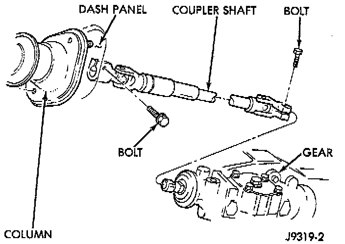
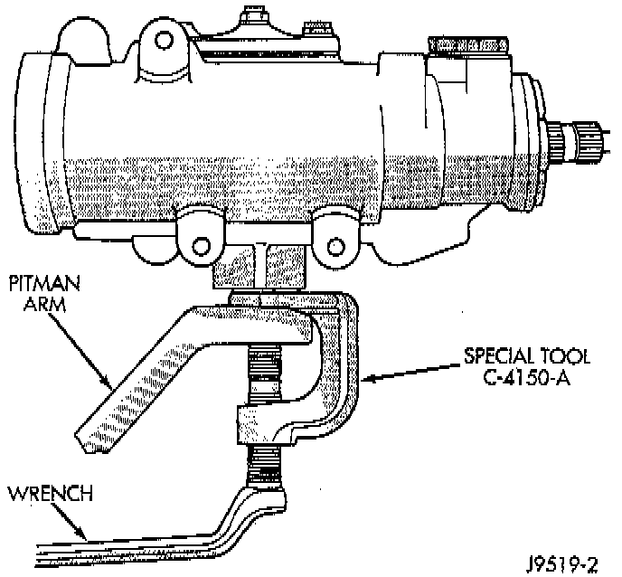
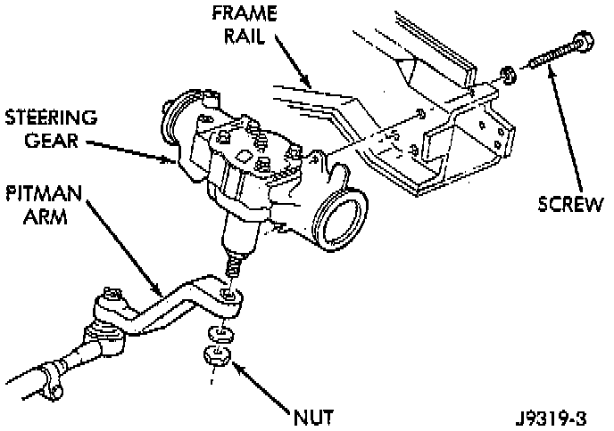

Steering Gear Replacement
REMOVAL1. Place the front wheels in the straight ahead position with the steering wheel centered.
2. Remove and cap the pressure and return hoses from the steering gear.

3. Remove the column coupler shaft from the gear.

4. Remove pitman arm from gear with Puller C-4150A, or equivalent.

5. Remove the steering gear retaining bolts and nuts. Remove the steering gear from the vehicle.
INSTALLATION
1. Position the steering gear on the frame rail and install the bolts. Tighten the bolts to 88 Nm (65 ft. lbs.) torque.
2. Install the column coupler shaft.
3. Install the pitman arm and tighten nut to 251 Nm (185 ft. lbs.).
4. Connect pressure and return hoses to steering gear and tighten to 28 Nm (21 ft. lbs.).